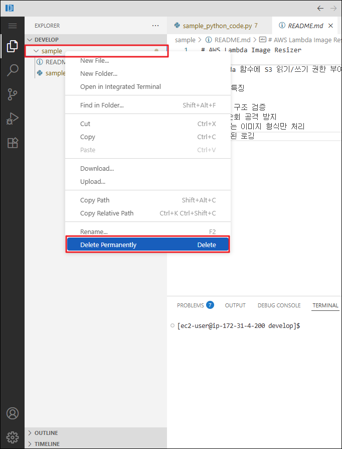

Task 2: Agent
Amazon Q Developer의 Agent 기능은 IDE 안에서 자연어 대화를 기반으로 "계획(Plan) - 실행(Execute) - 검증(Review)" 사이클을 자동화하는 자율형 AI 어시스턴트입니다. 단순한 코드 설명이나 제안을 넘어, 실제로 파일을 읽고 쓰며, 다중 파일에 걸친 복잡한 변경 사항을 자동으로 적용하고, 필요시 셸 명령을 실행할 수 있습니다.
Chat 모드와 달리 Agent는 자율성(Autonomy)을 갖추고 있어, 개발자의 최소한의 감독하에 복잡한 개발 작업을 완수할 수 있습니다. 모든 변경 사항은 diff 형태로 검토할 수 있으며, 원하지 않는 변경은 즉시 되돌릴 수 있습니다.
이 실습에서는 Agent의 핵심 기능인 자율적 코드 수정, 다중 파일 관리, 자동 문서 생성을 체험합니다.
🎯 학습 목표
이 실습을 완료하면 다음을 수행할 수 있습니다:
- Amazon Q Developer Agent 모드를 활성화하고 사용하기
- Agent의 자율적 순환 구조를 이해하고 작동 원리 파악하기
- Agent를 활용하여 코드 분석, 리팩토링, 보안 취약점 수정을 자동화하기
- 변경 사항을 diff 형식으로 검토하고 승인/거부하기
- Agent를 통해 프로젝트 문서(README.md)를 자동 생성하기
- 실수로 적용한 변경 사항을 Undo 기능으로 되돌리기
💡 Chat vs Agent: 언제 무엇을 사용할까?
-
Chat, Agent 비교 테이블
특징 Chat 모드 Agent 모드 자율성 답변만 제공, 파일 수정 불가 파일을 자동으로 읽고 쓰고 수정 작업 범위 단일 질문-답변 다중 단계 워크플로우 자동 실행 파일 변경 코드 제안만 제공 실제 파일에 변경 사항 적용 적합한 작업 질문, 코드 설명, 간단한 제안 리팩토링, 기능 구현, 문서 생성, 버그 수정 실행 시간 즉시 응답 수 초~수 분 소요 가능 검토 필요성 낮음 높음 (모든 변경 사항 검토 필수) Agent 모드 사용 시나리오
다음과 같은 경우 Agent 모드를 활성화하세요:
- ✅ 여러 파일에 걸친 리팩토링이 필요할 때
- ✅ 보안 취약점을 자동으로 수정하고 싶을 때
- ✅ 전체 프로젝트 문서를 생성해야 할 때
- ✅ 새로운 기능을 처음부터 구현해야 할 때
- ✅ 단위 테스트를 자동 생성하고 싶을 때
Act 1: Amazon Q Agent 활성화하기
1-1. 새 채팅 세션으로 시작하기
-
이전 실습(Chat)의 대화 기록이 남아 있다면, 새로운 Agent 작업을 위해 컨텍스트를 초기화하는 것이 좋습니다.
-
방법 1.
/clear명령어 사용- 채팅 입력창에
/clear를 입력하고 Enter를 누릅니다. - 대화 기록이 초기화되며, 새로운 주제로 대화를 시작할 수 있습니다.
- 채팅 입력창에
-
방법 2. 새 탭 열기
-
Amazon Q 패널 상단의 "+" 버튼을 클릭하여 새 채팅 탭을 엽니다.

-
왜 새 채팅을 시작해야 하나요?
Amazon Q는 활성화된 채팅의 전체 대화 기록을 참고하여 응답을 생성합니다. 이전 대화의 컨텍스트가 누적되면:
- 컨텍스트 용량을 초과하여 성능이 저하될 수 있습니다.
- 이전 주제와 혼동되어 부정확한 답변을 받을 수 있습니다.
다른 주제로 전환하거나 새로운 작업을 시작할 때는 항상 새 채팅을 여는 것을 권장합니다.
-
1-2. Agent 모드 활성화하기
-
채팅 패널 하단의 "Agentic" 토글을 활성화합니다.

-
토글이 켜지면 Agent 모드가 활성화되며, 이제 Amazon Q가 파일을 자율적으로 읽고 쓸 수 있습니다.
Agent 모드 사용 시 주의사항
Agent는 실제 파일에 변경 사항을 적용합니다. 다음 사항을 유념하세요:
- ✅ 변경 사항이 발생하면, diff를 반드시 검토하세요.
- ✅ 중요한 프로젝트에서는 Git 커밋 후 사용하거나 백업을 유지하세요.
- ✅ Agent가 예상치 못한 방향으로 진행하면 즉시 중단할 수 있습니다.
Act 2: 코드 분석 및 자동 리팩토링
2-1. Context 추가 및 리팩토링 요청하기
이번 실습에서는 보안 취약점과 코드 스멜이 포함된 Python 파일을 Agent가 자동으로 분석하고 리팩토링하도록 요청합니다.
-
Context 추가하기:
- 채팅 입력창에서
@를 입력한 후 Files 메뉴에서sample/sample_python_code.py를 선택합니다.
- 채팅 입력창에서
-
코드 분석 및 리팩토링 요청 프롬프트 입력:
예시 프롬프트
이 Python 코드를 분석하고, 발견된 취약점을 설명한 뒤, 권장 코드 스타일과 모범 사례에 따라 리팩터링된 코드를 제시하고 변경해주세요. -
Enter를 눌러 Agent 작업 시작:
2-2. Agent의 작업 과정 관찰하기
-
Agent가 활성화되면 다음과 같은 단계를 자율적으로 수행합니다:
1. 분석(Analysis): 제공된 파일을 읽고 코드 구조, 로직, 잠재적 문제를 파악합니다.
2. 계획(Planning): 수정이 필요한 부분을 식별하고 리팩토링 전략을 수립합니다.
3. 실행(Execution): 파일을 열고 코드를 수정하며, 필요시 여러 파일에 걸쳐 변경 사항을 적용합니다.
4. 검증(Verification): 변경 사항이 요청을 충족하는지 내부적으로 검증합니다.
-
Agent의 작동 원리
Amazon Q Developer Agent는 위 다이어그램과 같이 자율적인 순환 구조로 작동합니다:
1. Problem statement (문제 제시): 사용자가 자연어로 해결할 문제나 작업을 제시합니다.
2. LLM (대규모 언어 모델):
- 사용자의 요청을 이해하고 분석합니다.
- 현재 상태를 평가하고 다음에 취해야 할 행동을 결정합니다.
- 필요한 도구를 선택합니다.
3. Select tool (도구 선택):
- 파일 읽기, 쓰기, 검색, 명령 실행 등 작업에 필요한 도구를 선택합니다.
- 각 도구는 특정 목적에 최적화되어 있습니다.
4. Modify workspace (작업 공간 수정):
- 선택한 도구를 사용하여 실제 파일을 생성, 수정, 삭제합니다.
- 코드 변경, 파일 이동, 구조 재편성 등을 수행합니다.
5. Agent state update (에이전트 상태 업데이트):
- 수정 결과를 Agent의 내부 상태에 반영합니다.
- 무엇이 완료되었고 무엇이 남았는지 추적합니다.
- 다음 단계 계획을 조정합니다.
6. Prompt (프롬프트 업데이트):
- 새로운 정보와 현재 상태를 바탕으로 다음 LLM 호출을 위한 프롬프트를 생성합니다.
- 순환 반복: 목표가 달성될 때까지 2~6단계를 반복합니다.
-
작업이 완료되면 Agent는 사용자에게:
- ✅ Explanation of actions (작업 설명): 수행한 모든 작업에 대한 상세한 설명을 제공합니다.
- ✅ Code changes sent for user review (코드 변경 검토 요청): 모든 변경 사항을 diff 형태로 제출합니다.
2-3. 변경 사항 검토하기
Agent가 작업을 완료하면 수정된 파일 목록이 채팅 패널에 표시됩니다.
-
수정된 파일 이름(예:
sample_python_code.py)을 클릭합니다.
-
VS Code의 diff 뷰가 열리며, 좌측(변경 전)과 우측(변경 후)을 비교할 수 있습니다.
- 🔴 빨간색 줄: 삭제된 코드
- 🟢 초록색 줄: 추가된 코드
2-4. 변경 사항 승인 또는 되돌리기
-
변경 사항을 승인하려면:
- 채팅 패널의 변경 사항을 검토한 후, 문제가 없으면 자동으로 적용됩니다.
-
변경 사항을 되돌리려면:
- 채팅 패널에서 수정된 파일 우측의 "Undo" 버튼을 클릭합니다.
- 변경 사항이 즉시 롤백되어 이전 상태로 복원됩니다.
Undo의 제한사항
- ✅ 작업 직후: Undo 버튼을 통해 즉시 되돌릴 수 있습니다.
- ❌ 파일을 직접 수정한 후: Undo 기능이 작동하지 않을 수 있습니다.
- ❌ 브라우저 세션이 끊기거나 Amazon Q 세션이 끊길 경우: Undo 기능이 작동하지 않을 수 있습니다.
- 🔄 권장 사항: 중요한 변경 전에는 Git 커밋을 생성하거나, 변경 사항을 수락하기 전에 철저히 검토하세요.
Act 3: 프로젝트 문서 자동 생성
3-1. README.md 생성 요청하기
Amazon Q Developer의 Agent를 사용하여 프로젝트에 대한 문서를 자동 생성할 수 있습니다.
-
Context 추가:
@를 입력하고sample/sample_python_code.py파일을 다시 선택합니다.
-
문서 생성 요청 프롬프트:
예시 프롬프트
이 Python 코드에 대한 README.md 파일을 sample 디렉토리에 생성해주세요. -
Enter를 눌러 작업 시작:
3-2. 생성된 문서 확인하기
Agent가 작업을 완료하면:
-
채팅 패널에 작업 내용을 확인합니다.

-
파일 이름을 클릭하여 생성된 문서를 확인합니다.
-
생성된 README.md는 다음을 포함할 수 있습니다:
- 📋 프로젝트 개요: 코드의 목적과 기능
- 🚀 사용 방법: 설치 및 실행 가이드
- 📂 파일 구조: 주요 모듈 및 함수 설명
- 🔧 의존성: 필요한 라이브러리 목록
- 📝 예제 코드: 사용법 시연

생성 결과의 다양성
생성되는 모든 응답, 파일, 코드는 LLM의 특성상 매번 다를 수 있습니다.
동일한 프롬프트를 반복해도 약간씩 다른 결과가 나올 수 있으며, 이는 정상적인 현상입니다.
🧹 리소스 정리
실습을 마친 후, 다음 워크숍을 위해 생성된 파일을 정리합니다.
-
VS Code 좌측 사이드바에서 탐색기(Explorer) 아이콘을 클릭합니다.
-
sample디렉토리를 우클릭하고 "Delete Permanently"를 선택합니다.
리소스 정리의 이유
이 정리 작업은 다음 실습부터 불필요한 컨텍스트가 포함되지 않도록 하기 위함입니다.
💡 Agent 활용 고급 팁
-
반복 개선 요청하기
- Agent가 생성한 코드가 완벽하지 않다면, 추가 프롬프트로 개선을 요청하세요:
예시 프롬프트
방금 리팩토링한 코드에 타입 힌트(type hints)를 추가해줘.이 코드에 docstring을 추가하고, 예외 처리를 개선해줘. -
여러 파일을 동시에 수정하기
- Agent는 다중 파일 변경을 지원합니다:
예시 프롬프트
@sample/sample_python_code.py에 각 기능별 주석을 추가하고, @sample/README.md에 상세 내용을 추가해줘 -
Agent 작업 중단하기
- Agent가 잘못된 방향으로 진행 중이라면:
- "Stop" 버튼을 클릭하여 작업을 즉시 중단할 수 있습니다.
- 부분적으로 적용된 변경 사항(파일)은 Undo로 되돌릴 수 있습니다.
- Agent가 잘못된 방향으로 진행 중이라면:
✅ 요약
이 워크숍 활동에서 다음 항목을 실습했습니다:
- ✅ Amazon Q Agent 모드 활성화 및 Chat 모드와의 차이점 이해
- ✅ Agent의 자율적 순환 구조(LLM → 도구 선택 → 작업 공간 수정 → 상태 업데이트 → 프롬프트 → 반복) 이해
- ✅ Agent를 통한 자율적 코드 분석 및 리팩토링
- ✅ Diff 뷰를 활용한 변경 사항 검토 및 승인 프로세스
- ✅ Undo 기능으로 실수로 적용한 변경 사항 되돌리기
- ✅ Agent를 통한 프로젝트 문서(README.md) 자동 생성
- ✅ 워크스페이스 정리를 통한 컨텍스트 최적화
🚀 다음 단계
다음 실습에서는 Amazon Q Developer Rules 기능을 탐색하여 다음을 학습합니다:
- 프로젝트별 코딩 표준 및 규칙 정의하기
- Agent와 Chat이 규칙을 자동으로 준수하도록 설정하기
- 팀 전체에 일관된 코드 스타일 적용하기
Agent의 강력한 자동화 능력을 경험하셨나요? 이제 이를 제어하고 최적화하는 방법을 배워볼 차례입니다! 🎉